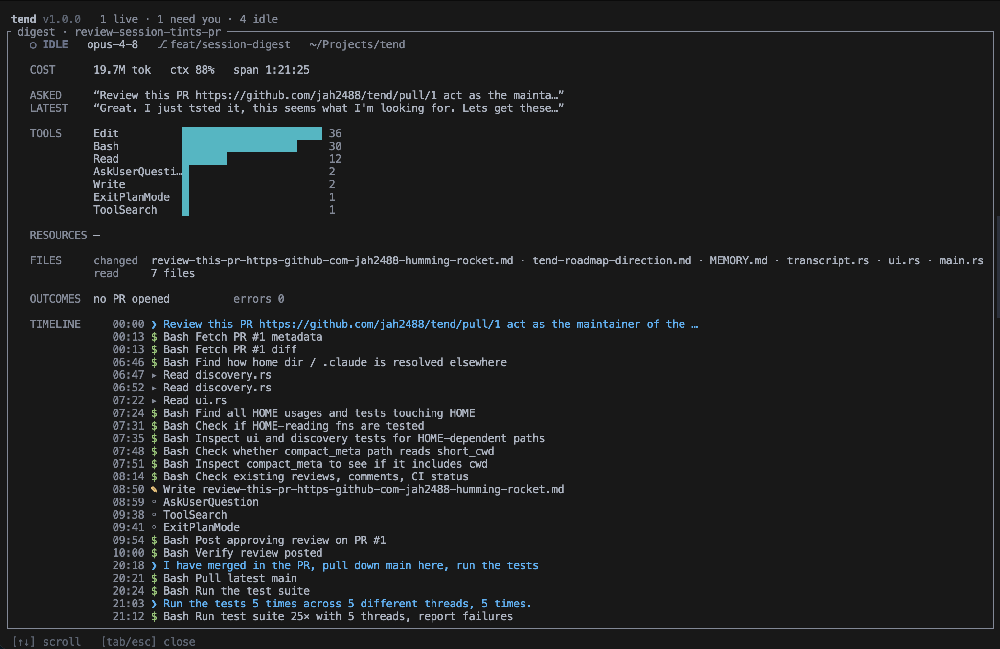

watch every claude code session at once
keep every Claude Code session in view.
You run several at once. Terminal, editor, SDK. tend watches them all and shows a live list: which are working, which need you, which are done.
❯ curl -fsSL https://raw.githubusercontent.com/jah2488/tend/main/install.sh | bash
Piping a script into a shell deserves a look first. Read it here.
- No network calls, ever
- Binary checksum-verified, SHA-256
- Reads
~/.clauderead-only; never edits your work
the cost of running agents in parallel
Too many sessions, not enough screen.
You fired off three Claude Code sessions this morning. One in a terminal, one inside your editor, one from the SDK.
Somewhere in there, one is blocked on a permission prompt. One is quietly churning through tokens. One finished an hour ago and you forgot to check.
tend watches all of them and shows you one glanceable list, so you stop tab-hopping to find the one that needs you.
watch
A live list, one row per session.
Every session shows its state, its latest message, its cost, and where it reached. When something is live, the row moves.
State
Six color-coded states, animated when live. A working session spins; one that needs you pulses.
What it's doing
A one-line summary from the latest prompt or message, the current git branch, and any PR opened.
Cost
Total tokens, a context-fullness bar, and live CPU percent. See a session about to fill up.
Activity
Tool calls and web requests made, plus which integrations it touched. Notion, Slack, the rest.
Worktrees
Sibling sessions in the same repo stay distinct. The worktree name sits right next to the branch.
Tints
A colored pip you set, by a file convention any tool can write. "This one's mine", "priority", "blocked".
Terminal sessions get a full card. Editor and SDK sessions collapse to a one-liner, so background work never crowds what you care about.
digest
Press Tab. See what a session actually did.
A read-only, scrollable account of what one session spent its time on, pulled fresh from its transcript the moment you open it.

- Cost: total tokens, context fullness, wall-clock span
- Asked / Latest: the first prompt and the most recent
- Tools: a histogram by frequency. MCP collapses to Server·method (e.g. Notion·notion-fetch)
- Resources: MCP integrations touched, with counts, plus web
- Files: changed (listed) versus read (counted)
- Outcomes: any PR opened, and how many errors it hit
- Timeline: a time-stamped feed of prompts, every tool call (read, edit, shell, web), PRs, and errors, read by glyph. Long sessions keep the most recent 1500
worktrees
Tell sibling sessions apart.
When you run parallel sessions across git worktrees in the same repo, tend shows the worktree name right next to the branch, marked with a branching glyph. So three sessions on three worktrees stay distinct, not three identical rows.
cost
Know what each session costs.
Every row shows total tokens, a context-fullness bar so you can see a session about to fill up, and live CPU percent. The digest rounds it out with the wall-clock span.
No estimation, no sampling. The numbers come straight from the transcript tend already reads.
privacy
Reads your sessions. Never edits them.
tend reads the metadata Claude Code already writes under ~/.claude/ and parses it read-only. It checks whether each session's process is still alive to tell live work from finished work. It never edits a session or transcript, and never touches your repo. The proof is in the code.
- No network calls. Ever
- No config file. No telemetry
- Never edits a session or transcript file
- The one thing it deletes: stale pip-color files under
~/.claude/tend-color/once their session is gone
- The binary is SHA-256 checksum-verified. The installer refuses on mismatch
- No root. Installs to
~/.local/bin. Runs nothing it downloads - Anything that changes your repo lives in extensions you choose, not in tend
extend
tend observes. Extensions act.
A read-only core by design. tend will never commit, push, or touch the network itself. All the doing is opt-in, and yours. Find one, or write one. Both take about a minute.
Find
Any executable on your PATH named tend-action-<name> is discovered with no config file, shown in the action menu, and run against the session you select. The first one is tend-ship (commit and push a session's work).
tend --list-actions
Build
Copy examples/tend-action-example, rename it tend-action-<name>, put it on your PATH, make it executable. It shows up in the menu next time you run tend.
cp examples/tend-action-example ~/.local/bin/tend-action-mine
# self-describe: one line of JSON on stdout, called once at startup $ tend-action-mine --tend-describe {"name": "Mine", "key": "M", "when": {"source": "terminal", "has_branch": true}} # when invoked, tend leaves its TUI and hands the extension locators, not a snapshot TEND_SESSION_ID=01HZK… TEND_TRANSCRIPT=~/.claude/projects/…/01HZK….jsonl TEND_PROJECT_DIR=~/proj/webapp TEND_GIT_BRANCH=fix/stripe-webhooks TEND_WORKTREE=checkout TEND_SOURCE=terminal TEND_VERSION=1.2.0
tendnever edits your sessions or repo. Extensions run with your own privileges- Extensions read fresh from disk via
TEND_*locators, so they stay correct even when tend isn't running - Missing or malformed describe output is tolerated. The action still lists under its name
already out there
install
One line. No root. Installs to ~/.local/bin.
❯ curl -fsSL https://raw.githubusercontent.com/jah2488/tend/main/install.sh | bash
- 01The installer downloads the latest release binary, verifies its SHA-256 checksum (refuses on mismatch), and handles chmod and Gatekeeper
- 02Make sure
~/.local/binis on yourPATH, then runtend - 03Update an existing install:
git pullcargo install --path . --force- quit tend (
q) and relaunch
A prebuilt binary ships for macOS on Apple Silicon. Other platforms build from source with a Rust toolchain: git clone, cd tend, cargo install --path .